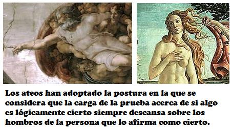

Origen del ateísmo
La palabra “ateo” evoca una multitud de imágenes en las mentes de los estadounidenses, desde lo valiente hasta lo horrible. De hecho, este término es uno de los más malinterpretados de la lengua inglesa. La etimología de la palabra revela exactamente lo que significa para los ateos mismos, y son los ateos quienes deben saber mejor lo que esta palabra significa.
La palabra “ateo” se deriva del griego “teísmo”, que es creencia en un dios o en varios, y “a”, que significa “sin”. Así, los ateos son personas que carecen de una creencia en un dios o en varios. Contrariamente a la creencia común y a algunos diccionarios antiguos, la gran mayoría de los ateos NO niega absolutamente la extremadamente pequeña posibilidad de Dios. Para negar a Dios categóricamente, un ateo tendría que saber todas las posibles definiciones de Dios, examinarlas todas, y encontrarlas a todas lógicamente auto contradictorias o falsas, y entonces rechazarlas todas. Hacer todo esto requeriría que el ateo fuera omnisciente. Además, los ateos se rehúsan a dar el “salto de fe” desde la evidencia hasta una conclusión que la evidencia no amerita. Los ateos dejan ese error lógico para los teístas. Como los ateos no pueden negar a dios lógicamente, no lo hacen. Cualquiera que diga que los ateos hacen una declaración global tan simplista sencillamente no está familiarizado con la literatura del ateísmo.
Círculos cuadrados
¿De dónde vino esta confusión? Primero, hasta hace poco las únicas personas que hablaban en público sobre el ateísmo eran clérigos. Mas allá de este poco afortunado hecho, existe la idea de que uno puede negar la existencia de un dios específicamente definido si la definición de tal dios lleva a una auto contradicción lógica. Por supuesto, lo único que significa tal auto contradicción es que un dios determinado no puede existir, tal como no puede existir un círculo cuadrado, porque las cosas lógicamente auto contradictorias por definición no pueden existir.
Bien, entonces los ateos son personas que carecen de una creencia en uno o varios dioses. ¿Qué significa esto? Bueno, significa que los ateos han adoptado tal postura porque se dan cuenta de que la carga de la prueba acerca de si algo es lógicamente cierto siempre descansa sobre los hombros de la persona que lo afirma como cierto. De modo que el teísta que afirma que Dios existe está obligado a demostrar esa postura. Esto se hace ofreciendo “pruebas” físicas o lógicas y tratando de llegar a una conclusión lógicamente convincente. Cuando el ateo le pide al teísta que presente su evidencia, la evidencia es insuficiente para concluir que existe un dios, sin importar cómo se defina “dios”. Casi todos los filósofos admiten esta realidad.
Fe contra experiencia
El teísta, sin embargo, tiene una “salida”. El teísta dice que aun cuando no haya pruebas lógicas (racionales) a favor de la existencia de un dios, no obstante uno debería aún aceptar la idea de un dios en base a la fe. La fe es básicamente creer algo sin evidencia adecuada ¡porque uno quiere creerla! Los ateos se rehúsan a dar este “salto de fe” o creer cualquier cosa por fe, pues entienden que hacerlo sería simplemente mentirse a uno mismo. Los ateos y la mayoría de las demás personas consideran que la mentira es inmoral. Adicionalmente, la religión es la única área que se basa en el concepto de fe. Es cierto que a menudo usamos descuidadamente la palabra “fe” cuando lo que en realidad queremos decir es “confianza basada en la experiencia”. Por ejemplo, cuando llegamos a un semáforo con luz roja de alto, nos detenemos y esperamos a que se ponga en verde. No tenemos fe en que se pondrá en verde, sino que tenemos confianza en que ocurrirá, basada en nuestras experiencias pasadas con la luz roja del semáforo. Sabemos que 999 de cada 1000 veces, la luz roja se pasará al verde. Si nunca hemos visto antes una luz roja, no sabríamos qué hacer la primera vez que nos la encontráramos. Si nos detuviéramos y esperáramos que se pusiera en verde sin antes haber visto jamás un semáforo en rojo, entonces estaríamos actuando en base a la fe.

La fe también sufre de muchos problemas adicionales. El conocimiento se adquiere mediante la razón y nunca mediante la fe. El conocimiento requiere de hechos, verificación independiente de los hechos, y una amplia aceptación final de los mismos. La fe no proporciona un método para obtener hechos o verificarlos. En cambio, la fe es puro deseo fantasioso; deseamos que algo sea de tal manera, aunque no podamos probar su veracidad racionalmente, así que lo creemos de todos modos.
Falta de evidencia
El ateo, por supuesto, permanece abierto a cualquier prueba adicional o evidencia que el teísta pueda ofrecer. Si alguno de sus argumentos resulta convincente, el ateo lo aceptará. Mientras tanto, el ateo vive su vida sin dios, o como si no hubiera dioses. Aunque el ateo no dice dogmáticamente que no es posible ningún dios, el ateo piensa que es sumamente improbable que exista alguno. Después de todo, los creyentes han estado ofreciendo supuestas “pruebas” a favor de la existencia de Dios durante más de mil años, y todas esas pruebas han fracasado ante el análisis lógico. Es bastante improbable (aunque ciertamente, remotamente posible) que alguien presente nuevas pruebas válidas en el futuro.
Una vez que el ateo ha barrido toda la “basura teológica”, ¿qué queda? ¿Hay alguna razón para existir? ¡Por supuesto! Los ateos sabemos que la humanidad debe enfrentar muchos problemas difíciles. Sin un dios, los seres humanos somos la única fuente de las soluciones. Esta Tierra es nuestro hogar y es el único que tenemos. Las generaciones pasadas han dedicado sus vidas a mejorar las condiciones de vida aquí en la tierra. Los seres humanos actuales continuamos en esta empresa a favor de nosotros mismos y de las generaciones futuras. Por lo tanto, los ateos sentimos que el “propósito” de la vida es hacer feliz a la gente y dejar el mundo en mejores condiciones que cuando aparecimos en él. Algunas personas llaman “humanismo” a este modo de vida. Los ateos lo hacen alimentando a los hambrientos, vistiendo a los desnudos, mejorando la salud, etc. Cada persona puede ayudar hasta el límite de sus capacidades. Nos hacemos felices haciendo felices a otras personas.
Pues muy bien, digas tal vez; pero ¿cómo puedes saber que esto sirve como motivación para todos? ¿No hay personas que necesitan sentir que hay vida después de la muerte, o que hay un dios cuidándolos? Los ateos replican que si tú necesitas de la religión, y si esas creencias te hacen feliz, entonces puedes ser creyente. Los ateos están a favor de la total libertad religiosa. De todos los grupos, nosotros hemos estado entre los más perseguidos por nuestras posturas, así que nosotros, más que todos los demás grupos, comprendemos la importancia de la libertad de religión (¡y la de no religión!) para todos. Por supuesto, la auténtica libertad religiosa implica el derecho a no creer así como el de creer. Los ateos, claro, piensan que es mucho mejor creer sólo lo que es cierto., pero la gente tiene el derecho de creer en lo que sea, cierto o falso.

¿Qué quieren los ateos?
Bueno, no queremos más que nos dejen en paz y vernos libres de persecuciones y acoso. Queremos ser capaces de decir en público que somos ateos, sin temor a represalias económicas o sociales. Queremos ser libres de distribuir nuestra literatura del mismo modo que las religiones distribuyen la suya. Queremos la misma clase de respeto que da el gobierno a las religiones. Queremos el mismo acceso a los medios masivos de comunicación que tienen las religiones. No queremos ni más ni menos que aquello a lo que tiene derecho cualquier grupo, en una sociedad que se enorgullece de su libertad religiosa y su pluralismo.
Si estás de acuerdo en que lo que decimos tiene sentido, te damos la bienvenida a unirte a Atheists United (Ateos Unidos) en busca de compañerismo, educación y la interminable lucha a favor de la separación entre iglesias y estado.

Lecturas recomendadas:
Una antología del ateísmo y del racionalismo, por Gordon Stein, Prometheus Books, Buffalo, NY, 1980.
Ateísmo: el Caso contra Dios, por George H. Smith, Prometheus Books, Buffalo, NY, 1979.
La Enciclopedia de la Increencia, editada por Gordon Stein, Prometheus Books, Buffalo, NY, 1985.
El Manual de Lucifer, por Lee Carter, Academic Associates, Los Angeles, CA, 1977.
Nota:
Atheists United es una organización educacional que promueve el ateismo en Los Angeles, California. Sus reuniones se realizan el tercer sábado de cada mes de 11:00 am a 1:00 pm. Su dirección es: 4773 W. Hollywood Blvd. Los Angeles, CA 90027 Tel. (323) 666-4258.
Derechos Reservados 1985, Atheists United.
Volver a Simplemente ateísmo
Comentarios
Comments powered by Disqus